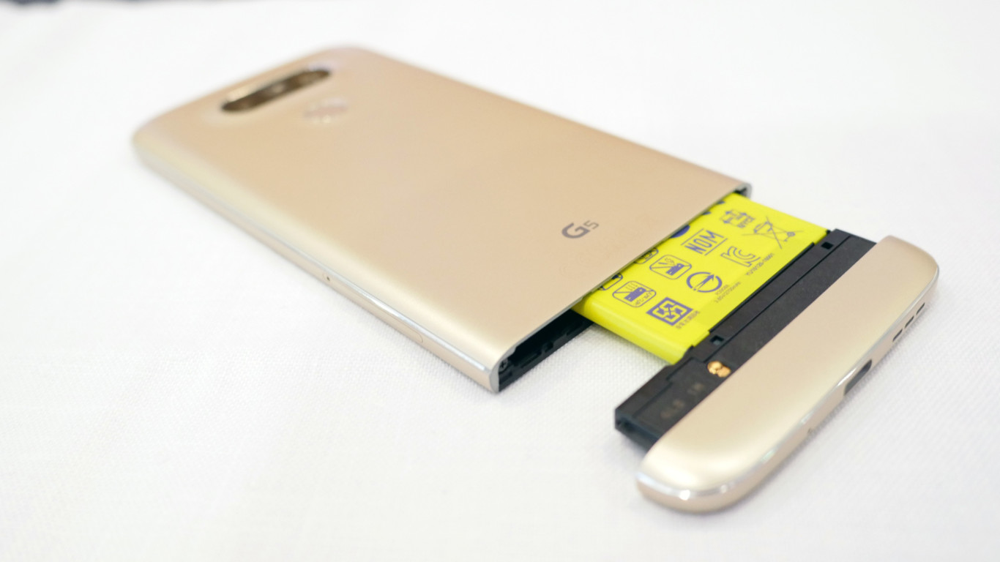

El LG G5 supone una bocanada de aire fresca en un mercado donde cada vez es más difícil innovar y diferenciarse. Es la primera vez que una empresa logra integrar una batería removible en un diseño prácticamente cerrado y compuesto principalmente de metal, al tiempo que los demás competidores deciden simplemente sacrificar la batería desmontable.
Otra de las grandes sorpresas del insignia de LG fue su sistema modular. Sin embargo, intercambiar o añadir nuevas partes al G5 es un proceso que requiere apagar y encender el celular y es difícil no tener la sensación de que alguna parte se va a romper al remover la batería de cada módulo. Además, en este momento no hay tantos módulos como para hacer que este diseño modular sea la principal razón para comprarlo, salvo si quieres una batería removible.
En un mercado tan saturado, el LG G5 logra diferenciarse por ofrecer un diseño modular con una batería removible y doble cámara trasera que es un placer usar, además de ofrecer uno de los mejores desempeños del mercado.
Sin embargo, el LG G5 no logra la larga duración de batería ni la resistencia al agua del Samsung Galaxy S7 o el Galaxy S7 Edge, ni su diseño logra verse o sentirse tan lujoso como aquellos celulares. Tampoco logra ser tan económico como el Nexus 6P.
Afortunadamente, el LG G5 es el mejor celular con batería removible que hay disponible y lo que ofrece es suficiente para cumplir con el uso cotidiano de la mayoría de las personas